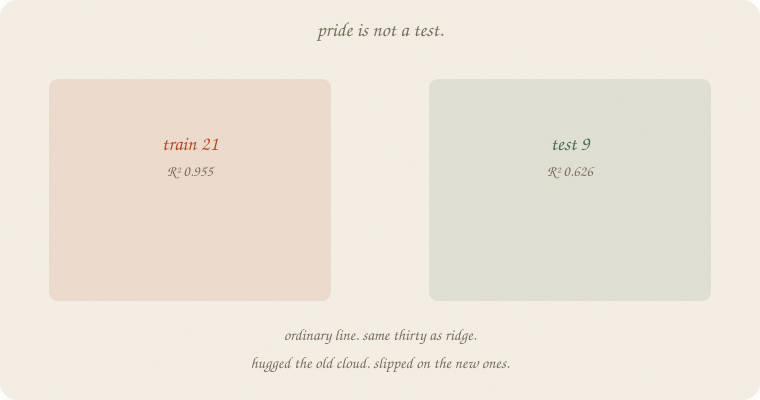
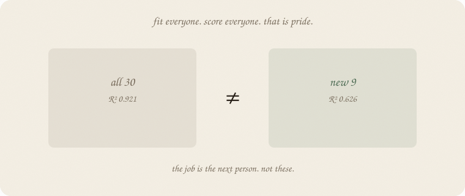
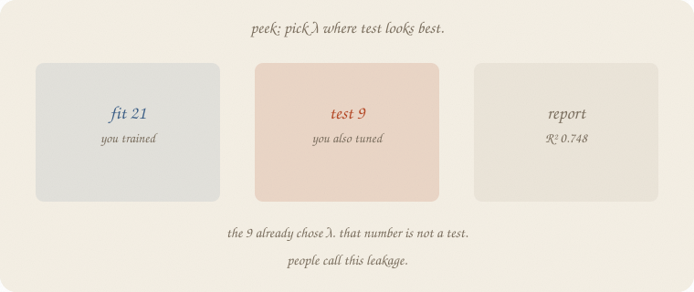
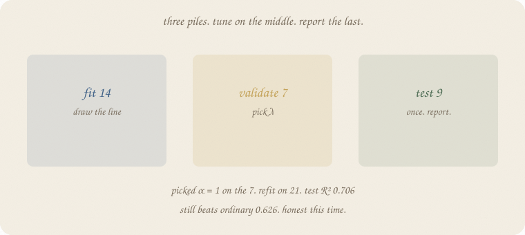
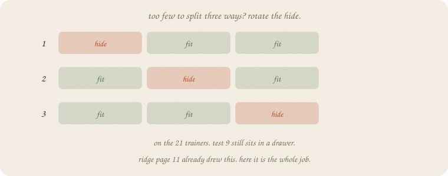
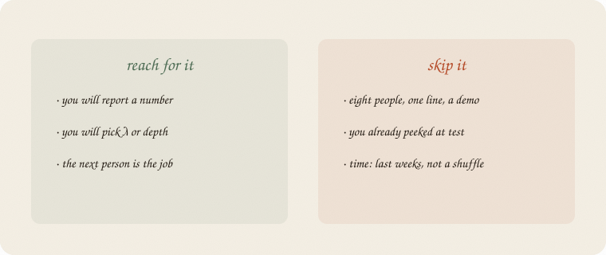

datazines · a sketchbook

Read 01 linear regression and 02 ridge regression first — especially ridge page 3 (old points are a trap) and page 11 (the folds). Same thirty graders, seed 7, same twins and junk. Not the eighty pass/fail class. Not unlabeled.
This is 01 of fundamentals. Bias vs variance is 02 bias variance (ridge already drew the dartboard). Metrics later. Significance lives in 01 t-test — don’t clone it.
Flip it like a notebook. One page = one idea. Done.
Thirty students. Grade from hours, sleep, tutor. Minutes is a twin. Coffee and noise are junk. House seed 7.
You can fit a line on all thirty and print R². Linear 01 did that on eight people. It is a volume knob for these people.
The job is not “look smart on the people you already asked.”
The job is: guess well for the next person.
That is this notebook. Not a new model. A ritual for leftover.
Fit ordinary least squares on all thirty. Score all thirty.

R² 0.921. Looks grown-up. It used every leftover twice: once to draw the line, once to grade it.
Hide 9 people. Fit on 21. Score the 9.
| pile | people | ordinary R² |
|---|---|---|
| all 30 (pride) | 30 | 0.921 |
| train | 21 | 0.955 |
| test | 9 | 0.626 |
The line hugged the 21 (0.955). The 9 had not voted. 0.626. That gap is the lesson from ridge page 3. This page names it: train vs test.
sklearn’s train_test_split(..., test_size=0.3, random_state=0) is that hide. Same split as the ridge page. Same numbers.
Ridge needs a λ. Temptation: try a few λ, keep the one where test R² is biggest.

α (sklearn alpha = λ) |
train R² | test R² |
|---|---|---|
| 1 | 0.944 | 0.706 |
| 3 | 0.939 | 0.731 |
| 10 | 0.907 | 0.748 |
| 30 | 0.780 | 0.672 |
Picked 10. Report 0.748. Looks like ridge won.
The 9 already chose λ. That number is not a test. People call this leakage. Same sin as shuffling weeks into a “test” set (01 lag trend season). The future voted on the knobs.
Hide the 9 and do not touch them until the end.
From the 21, hide 7 more. Fit on 14. Pick λ on the 7. Then refit the winner on all 21. Then score the 9. Once.

| pile | people | job |
|---|---|---|
| fit | 14 | draw the line |
| validate | 7 | pick λ |
| test | 9 | report. once. |
On the 7, α = 1 wins (val R² 0.736). α = 10, the peek’s darling, is 0.647 on this hide.
Refit α = 1 on the 21. Test R² 0.706. Still beats ordinary 0.626. Honest this time.
Seven people is a thin judge. The number wiggles. That is why the next page exists.
Too few to split three ways? Keep the 9 in a drawer. On the 21, hide a third, fit the rest, score the hide. Rotate. Average the pain.

That ritual is cross-validation. Ridge page 11 already drew the folds. Here it is the whole job, not a volume-knob aside.
3-fold CV on the 21 (test still untouched):
| α | CV mean | the three hides |
|---|---|---|
| 1 | 0.702 | 0.985 / 0.864 / 0.259 |
| 3 | 0.683 | 0.986 / 0.845 / 0.218 |
| 10 | 0.522 | 0.954 / 0.698 / −0.084 |
| 30 | 0.070 | 0.786 / 0.35 / −0.925 |
Picked 1 again. Refit on 21. Test 0.706. Same report as the one validate pile, more stable pick.
One fold went 0.259. Seven-ish people, leftover rattles. Average anyway. Do not throw out the ritual because one hide was ugly.
Time is a different hide: last weeks, not a shuffle (01 lag trend season).
If you keep only one thing:
leftover on new people. if you tune, hide a third pile.
Same thirty as 02 ridge regression. Same split (random_state=0). Ordinary hugs. Peek vs three piles vs CV. House seed 7.
import numpy as np
from sklearn.linear_model import LinearRegression, Ridge
from sklearn.model_selection import train_test_split, KFold
from sklearn.pipeline import make_pipeline
from sklearn.preprocessing import StandardScaler
rng = np.random.default_rng(7)
n = 30
hours = rng.uniform(1, 6, n)
sleep = rng.uniform(4, 9, n)
tutor = (rng.random(n) > 0.6).astype(float)
coffee = rng.uniform(0, 4, n)
noise = rng.normal(0, 1, n)
minutes = hours * 60 + rng.normal(0, 3, n)
naps = sleep + rng.normal(0, 0.25, n)
grade = 1.8 + 0.9 * hours + 0.35 * sleep + 0.6 * tutor + rng.normal(0, 0.55, n)
X = np.column_stack([hours, minutes, sleep, naps, tutor, coffee, noise])
Xtr, Xte, ytr, yte = train_test_split(X, grade, test_size=0.3, random_state=0)
print("n", n, "train", len(ytr), "test", len(yte))
ols = LinearRegression().fit(Xtr, ytr)
print("ordinary R² train", round(ols.score(Xtr, ytr), 3),
" R² test", round(ols.score(Xte, yte), 3))
print("ordinary R² all 30", round(LinearRegression().fit(X, grade).score(X, grade), 3))
print("\npeek — pick λ on the test pile")
best_te, best_a = -1, None
for a in [1, 3, 10, 30]:
r = make_pipeline(StandardScaler(), Ridge(alpha=a)).fit(Xtr, ytr)
te = r.score(Xte, yte)
print(f" alpha={a:<3} R² train {r.score(Xtr, ytr):.3f} R² test {te:.3f}")
if te > best_te:
best_te, best_a = te, a
print("picked on test:", best_a)
Xfit, Xva, yfit, yva = train_test_split(Xtr, ytr, test_size=7, random_state=0)
print("\nhonest — 14 fit / 7 validate / 9 test")
best_va, best_a = -1, None
for a in [1, 3, 10, 30]:
r = make_pipeline(StandardScaler(), Ridge(alpha=a)).fit(Xfit, yfit)
va = r.score(Xva, yva)
print(f" alpha={a:<3} R² fit {r.score(Xfit, yfit):.3f} R² val {va:.3f}")
if va > best_va:
best_va, best_a = va, a
print("picked on val:", best_a)
win = make_pipeline(StandardScaler(), Ridge(alpha=best_a)).fit(Xtr, ytr)
print("refit on 21, R² test", round(win.score(Xte, yte), 3))
print("\n3-fold CV on the 21 (no test)")
kf = KFold(n_splits=3, shuffle=True, random_state=7)
best_cv, best_a = -1, None
for a in [1, 3, 10, 30]:
scores = []
for ti, vi in kf.split(Xtr):
r = make_pipeline(StandardScaler(), Ridge(alpha=a)).fit(Xtr[ti], ytr[ti])
scores.append(r.score(Xtr[vi], ytr[vi]))
mu = float(np.mean(scores))
print(f" alpha={a:<3} CV {mu:.3f} folds {np.round(scores, 3).tolist()}")
if mu > best_cv:
best_cv, best_a = mu, a
print("picked on CV:", best_a)
win = make_pipeline(StandardScaler(), Ridge(alpha=best_a)).fit(Xtr, ytr)
print("refit on 21, R² test", round(win.score(Xte, yte), 3))
n 30 train 21 test 9
ordinary R² train 0.955 R² test 0.626
ordinary R² all 30 0.921
peek — pick λ on the test pile
alpha=1 R² train 0.944 R² test 0.706
alpha=3 R² train 0.939 R² test 0.731
alpha=10 R² train 0.907 R² test 0.748
alpha=30 R² train 0.780 R² test 0.672
picked on test: 10
honest — 14 fit / 7 validate / 9 test
alpha=1 R² fit 0.956 R² val 0.736
alpha=3 R² fit 0.948 R² val 0.731
alpha=10 R² fit 0.899 R² val 0.647
alpha=30 R² fit 0.737 R² val 0.444
picked on val: 1
refit on 21, R² test 0.706
3-fold CV on the 21 (no test)
alpha=1 CV 0.702 folds [0.985, 0.864, 0.259]
alpha=3 CV 0.683 folds [0.986, 0.845, 0.218]
alpha=10 CV 0.522 folds [0.954, 0.698, -0.084]
alpha=30 CV 0.070 folds [0.786, 0.35, -0.925]
picked on CV: 1
refit on 21, R² test 0.706
Pride 0.921. Train 0.955, test 0.626 — ordinary hugged. Peek picked α = 10 and would have reported 0.748. Three piles and CV both pick 1, then report 0.706 on the 9. sklearn’s alpha is λ. KFold is the rotate. The test array is not an argument to KFold.
Ridge’s printed run used α = 10 on purpose: twins share, test 0.748 vs ordinary 0.626. That was a demo of the tax, not a claim that 10 was chosen honestly. This notebook is the ritual that would choose.
| word | meaning |
|---|---|
| train | people you fit on |
| test | people you score once, at the end |
| validate | people you use to pick λ / depth / k |
| pride | score on the people you fit |
| leakage | test helped pick the knobs |
| CV | rotate the validate hide on the trainers |
Also called: train/test = holdout · validate = development set · CV = k-fold · peek = test-set tuning.

Reach for it when you will report a number, or pick λ / depth / k, and the job is the next person.
Skip it when eight people and one line is a demo (01 linear regression page 16 is pride on purpose); you already peeked; the “new people” are later in time — then last weeks, not a shuffle (01 lag trend season).
Pays you: leftover that means something. A λ you can defend. The sentence from ridge page 3, as a habit.
Costs you: fewer people to fit. A thin validate pile rattles (0.259 on one fold). CV is slower. Not a model — a ritual for leftover.
Fundamentals 01. Leftover on new people. Next: 02 bias variance — ridge’s dartboard, as its own notebook. Metrics after that. Not a p-value (that is 01 t-test).
Flip it like a notebook. One page = one idea.